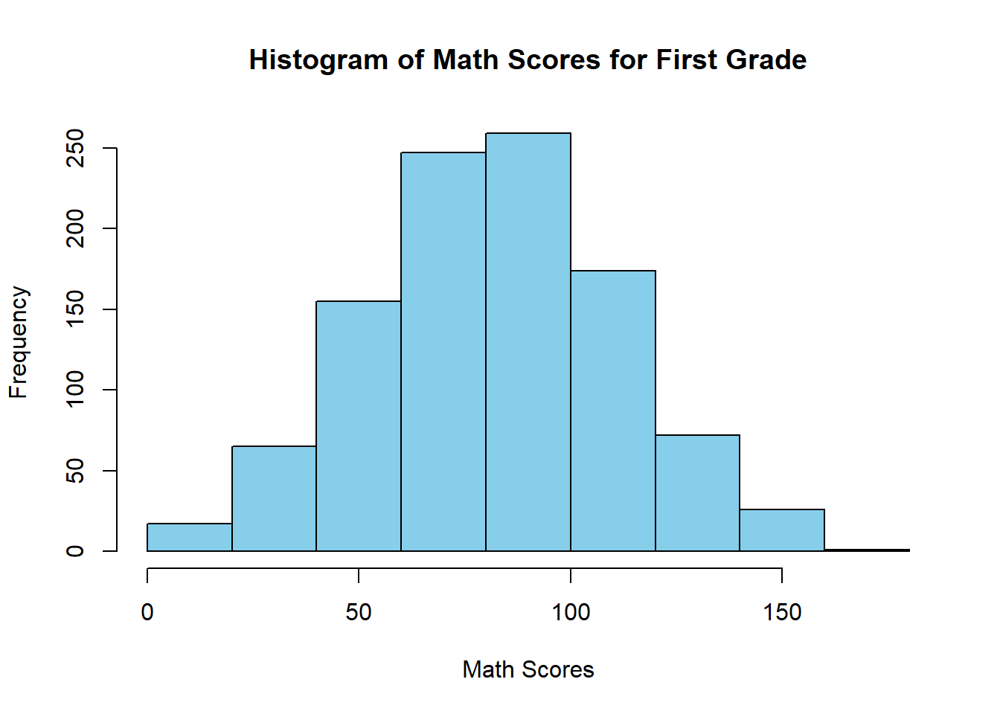
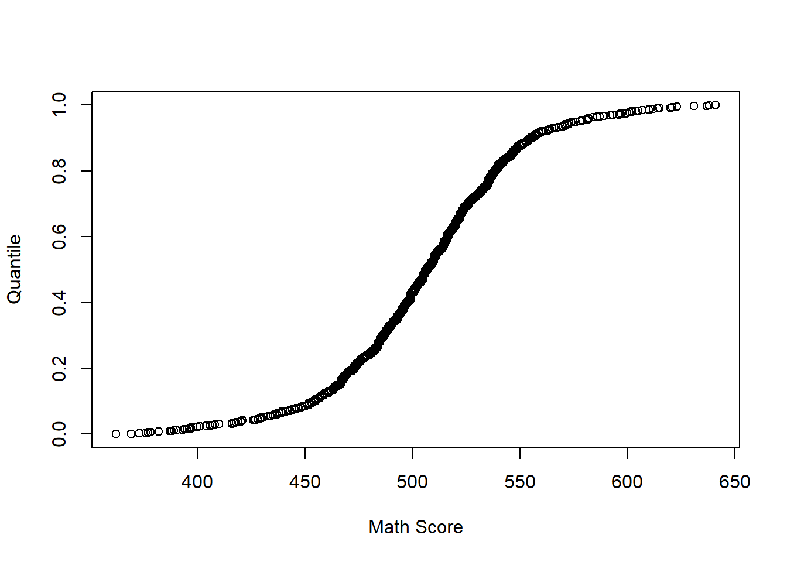
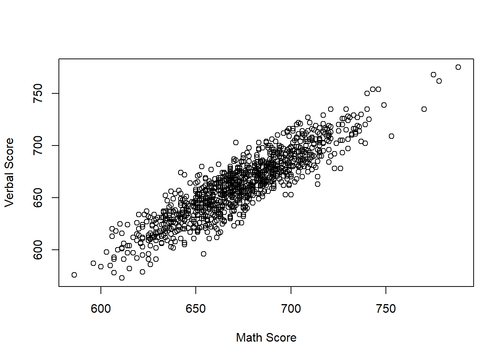

4 Data Description
In this section, we explore how data can be classified, summarized, and interpreted.
We introduce key concepts for both categorical and quantitative data, and we examine graphical and numerical tools used in statistics.
4.1 Data Simulation
For this section we will simulate a data set for student performance in math and verbal tests accross 10 schools. For each student we will include the following variables:
Variables:
- Student ID
- Student School
- Student Grade
- Student Age
- Income Level
- Education Level Parents
- Math Score
- Verbal Score
4.2 Types of Data
4.2.1 Quantitative vs. Qualitative Data
Definition 4.1 (Types of Data) Data can be classified into quantitative (numerical) and qualitative (categorical) types.
Quantitative data consist of numerical measurements; qualitative data describe categories or attributes.
4.3 Why Do We Have to Describe Data?
Describing data allows us to:
- Explain data.
- Identify patterns or trends
- Summarize large datasets compactly
- Compare groups or populations
- Detect outliers or unusual observations
- Prepare for inferential analysis
Raw data alone rarely reveal useful insight without proper summarization.
4.4 Types of Data Description
4.5 Techniques to Describe Categorical Data


4.7 Frequency Table
A frequency table groups quantitative data into intervals (classes).
4.7.1 Class Frequency
Definition 4.2 (Class Frequency) The class frequency is the number of observations that fall within a specific interval.
4.7.2 Relative Frequency
Definition 4.3 (Relative Frequency) The relative frequency is the class frequency divided by the total number of observations.
Example:
# Frequency Classes
breaks <- seq(0, 800, by = 100)
matScoBin <- cut(matSco, breaks = breaks, right = TRUE)
table(matScoBin)## matScoBin
## (0,100] (100,200] (200,300] (300,400] (400,500] (500,600] (600,700] (700,800]
## 756 1163 1132 1156 1166 1203 1225 1198## matScoBin
## (0,100] (100,200] (200,300] (300,400] (400,500] (500,600] (600,700] (700,800]
## 0.08400933 0.12923658 0.12579175 0.12845872 0.12956995 0.13368152 0.13612624 0.133125904.7.3 Histograms
Histograms partition quantitative data into bins and display frequencies as bars.
4.7.3.1 How to Build Them
Steps:
- Choose number of intervals (bins).
- Determine bin width.
- Count frequencies per bin.
- Draw adjacent bars.
4.7.3.2 Number of Intervals
Common guidelines:
- Square-root rule: \[k = \sqrt{n}\]
- Sturges’ rule: \[k = 1 + \log_2(n)\]
Example:
hist(schDat$Math_Score[schDat$Grade == 1], col="skyblue", main = "Histogram of Math Scores for First Grade", xlab = "Math Scores")
4.8 General Guidelines for Successful Graphics
- Label axes clearly
- Use consistent scales
- Avoid unnecessary decoration
- Ensure readability
- Highlight key trends
4.10 Measures of Variability
4.10.1 Range
Definition 4.7 (Range) The range is the difference between the maximum and minimum values in a dataset.
## [1] 354 156## [1] 198## [1] 251.898## [1] 335.53994.10.3 Quantile Plot
plot(sort(schDat$Math_Score[schDat$Age == 11]),
ppoints(length(schDat$Math_Score[schDat$Age == 11])),
xlab = "Math Score",
ylab = "Quantile")
4.10.6 Deviation
A deviation is the difference between an observation and the mean. That is \[ x_i - \bar{x} \]
4.10.7 Variance
Definition 4.8 (Variance) The variance measures the average squared deviation from the mean. \[ s^2 = \frac{\sum_{i=1}^n (x_i - \bar{x})^2}{n-1} \]
4.10.8 Standard Deviation
Definition 4.9 (Standard Deviation) The standard deviation is the square root of the variance.
Example:
## [1] 221.3948## [1] 49015.674.10.11 68%, 95%, and 99.7% Empirical Rule
For bell‑shaped distributions:
- 68% of values fall within 1 SD of mean
- 95% within 2 SD
- 99.7% within 3 SD
4.10.12 Coefficient of Variation
The CV measures spread relative to the mean:
\[ CV = \frac{SD}{\text{mean}} \]
4.11 Techniques for Two Variables
4.11.1 Contingency Tables
Summarize two categorical variables.
##
## College Graduate School Highschool No Highschool
## High 225 219 256 237
## Low 692 648 671 736
## Middle 1330 1294 1339 1353

4.11.4 Scatter Plot
Used for two quantitative variables.
plot(schDat$Math_Score[schDat$Grade == 8], schDat$Verbal_Score[schDat$Grade == 8], xlab = "Math Score", ylab = "Verbal Score")